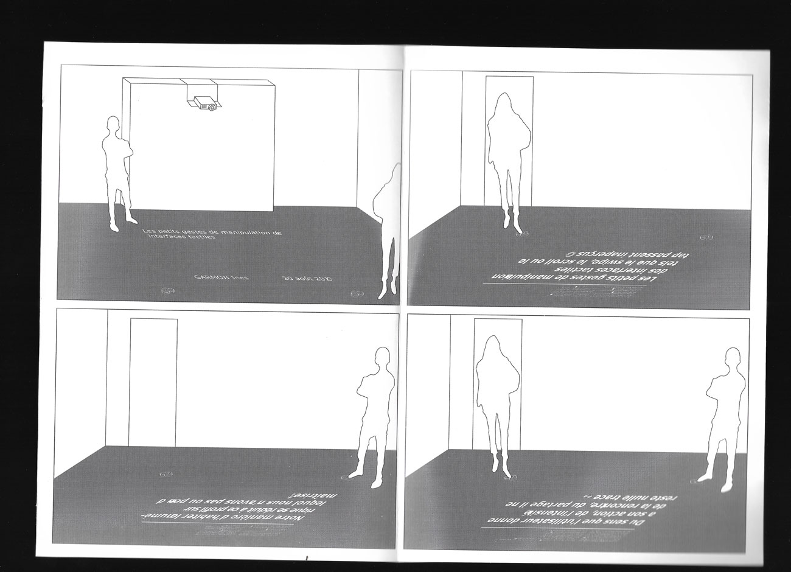
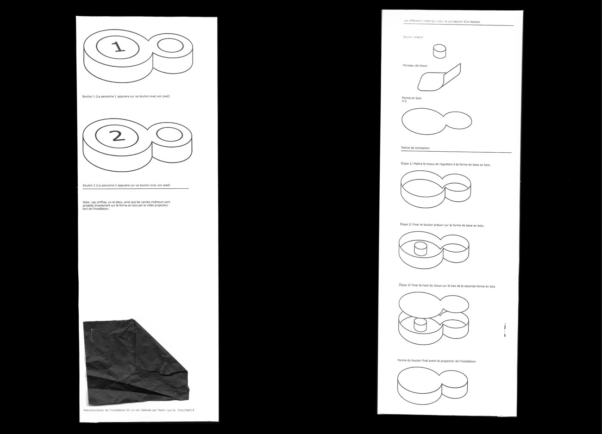
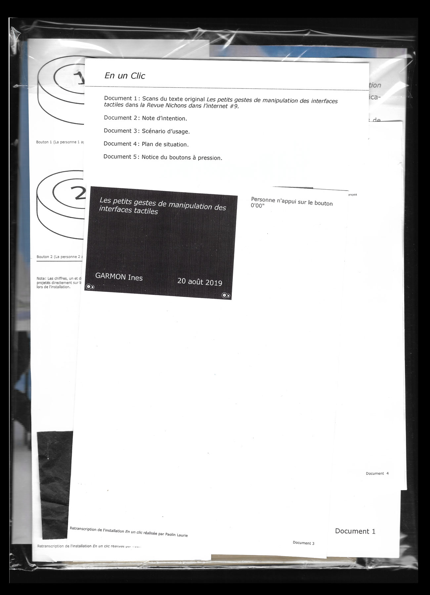
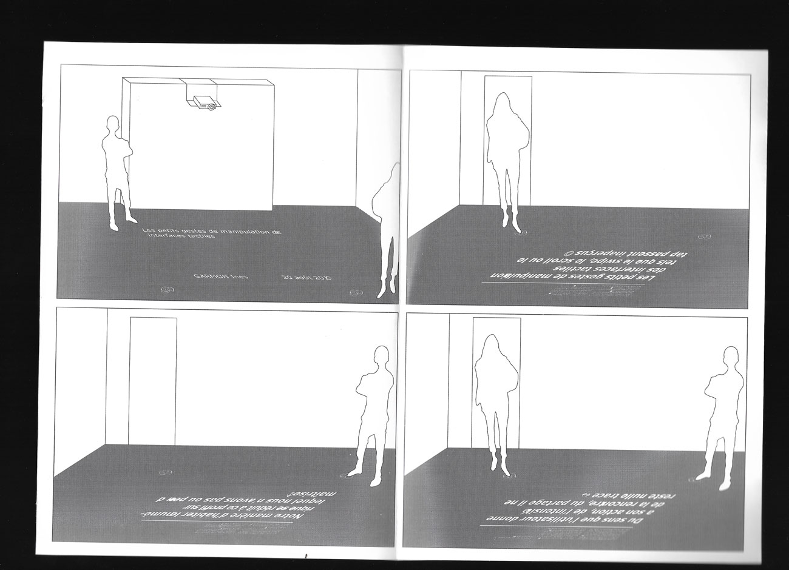
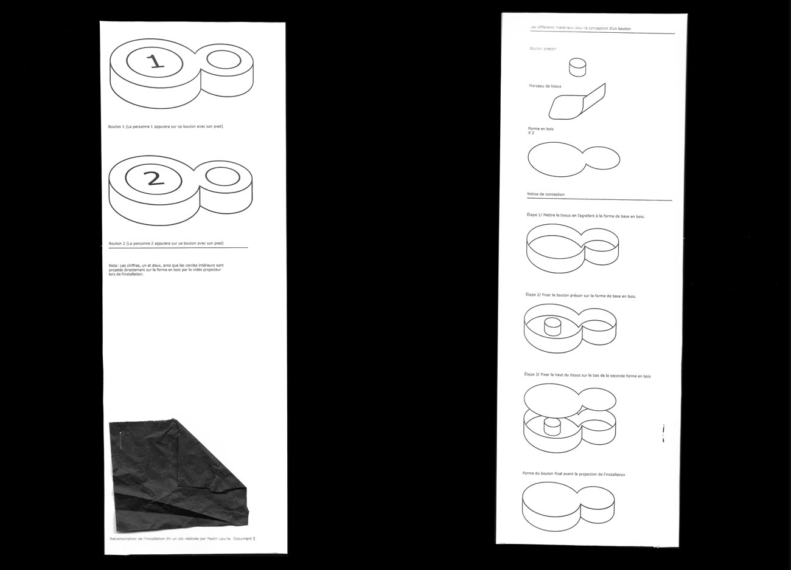
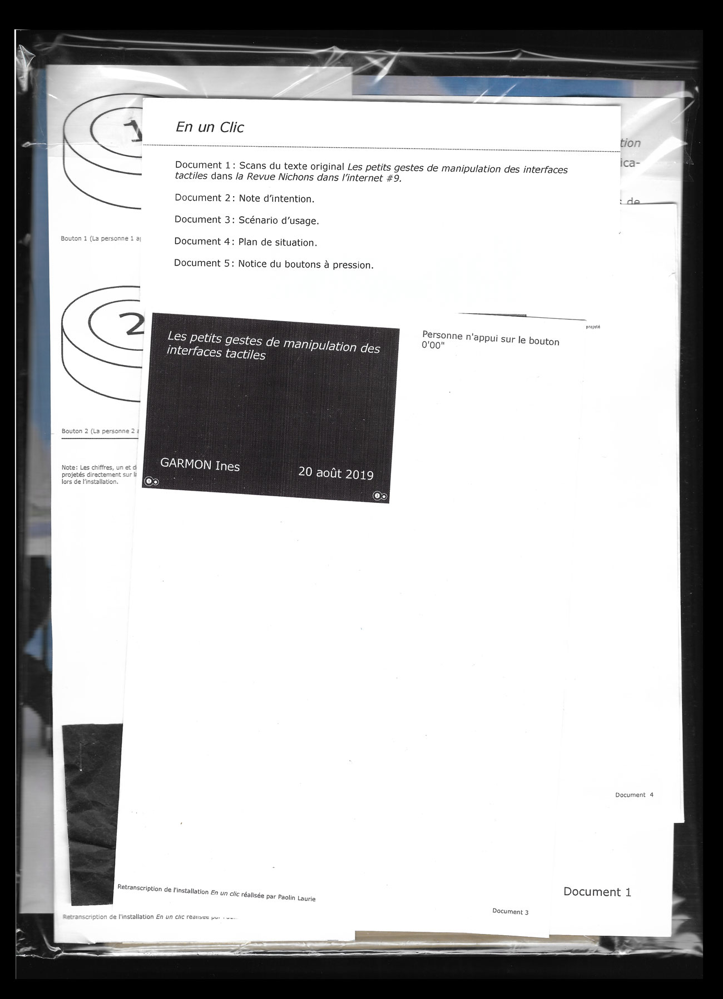

- ←
- En un clic
- →

Pour l’installation En un clic, j’ai travaillé avec le texte Les petits gestes de manipulation des interfaces tactiles d’Ines Garmon, doctorante, étudiant la digipulation de nos applications mobiles. Le but de cette installation interactive et de vous donner à lire et à voir des extraits de ce texte que j’ai prélevé dans le revue Nichons nous dans l’Internet. La question d’échelle est en jeu, on reste sur un texte à lire et à manipuler mais en sortant des interfaces standards de l’écran d’ordinateur ou du téléphone. Les extraits de textes sont projetés sur une surface lisse plus grande, au sol permettant d’avoir un rapport plus immersif avec le texte que sur une projection au mur, les personnes pouvant intéragir directement sur la projection. Ici je présente le mode d'emploie de cette installation.
 




